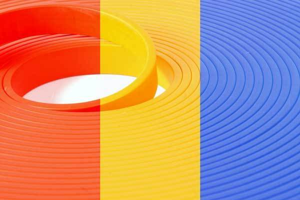
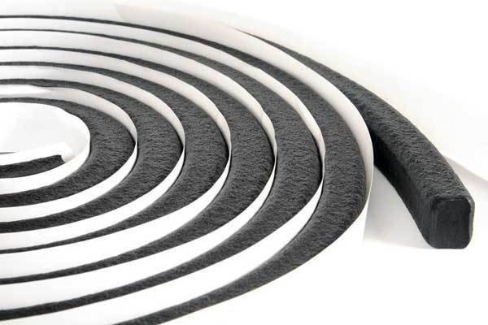
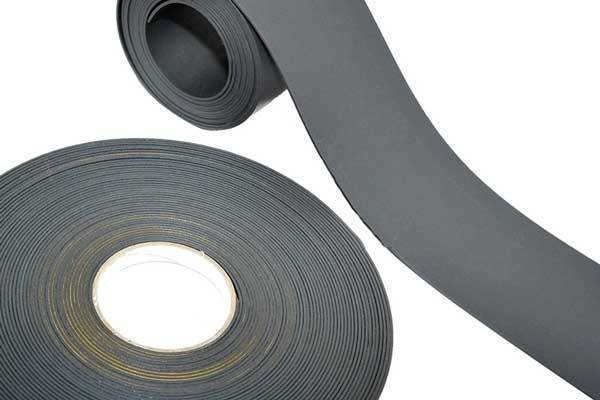
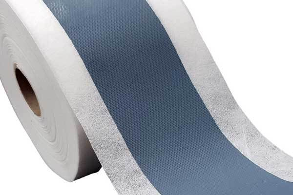
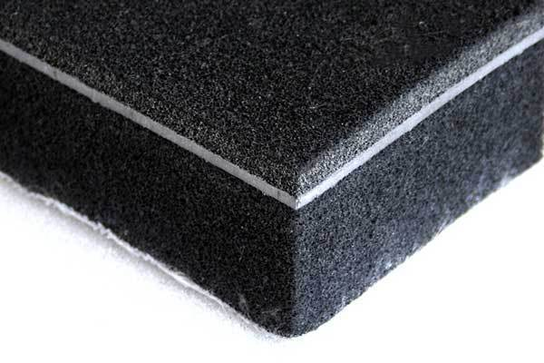
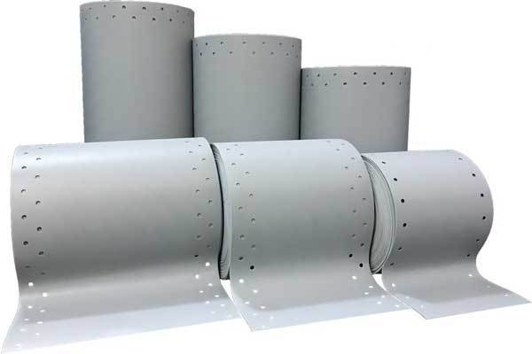

Продукция Pronill







Pronil
Наша компания является ПРОИЗВОДИТЕЛЕМ (Стамбул / ТУРЦИЯ) материалов для гидроизоляция, звукоизоляция,теплоизоляция, паро-изоляция, огнезащита, фольгированная изоляция, герметизирующие материалы, герметики, фольгированные ленты, утеплителей. При ремонте, отделке, установке оконных проемов а также при любом строительстве просто необходима наша продукция:
1. PRONIL ACR- 300 (600,900) Hydrophilic Waterstop
Pronil ACR - это гидрофильная лента на основе акрилового полимера. Применяется для гидроизоляции рабочих швов в бетонных конструкциях. Набухает при контакте с водой, не содержит бентонит. Новая химическая формула материала обеспечивает ленте одновременно высокую эластичность, химическую стойкость и способность к многократному циклическому увеличению объема не только в чистой воде, но и в растворах солей, щелочей и в присутствии нефтепродуктов.
ИСПОЛЬЗОВАНИЕ
- Для гидроизоляции:
- Рабочих швов
- Вводов труб и других стальных изделий через стены и пол
- Конструкционных швов в изделиях ЖБИ
- Конструкционных швов в кабельных каналах и т.п.
- Вводов всех остальных коммуникаций через бетонные плиты
ХАРАКТЕРИСТИКИ
- Температурный диапазон установки : -20 С / +50 С
- Сопротивляемость гидростатическому давлению : 7 bar
- Твердость по Шор А : 40
- Набухает при контакте с водой до 300 (600,900)%
- Может набухать в трещинах
- Длительный срок эксплуатации
- Стоек к воздействию воды и различным химикатам
- Не требуется время для набора прочности
- Нет необходимости в сварке
- Легко повторяет форму сложных швов или изолируемых деталей
- Выпускается различных типоразмеров
МОНТАЖ
Pronil ACR монтировать на клеящий состав или механически с помощью крепежа фиксирующего ленту в проектном положении. Перед монтажом поверхность очистить от грязи, наледи и масла. Для предотвращения преждевременного набухания, оберегать ленту от контакта с водой до момента заливки бетоном.
ХРАНЕНИЕ
Хранить в сухом, защищенном от прямых солнечных лучей, месте. Срок хранения 48 месяцев.
ЦВЕТ
Красный (желтый, черный)
Вся продукция сертифицирована
2. Профиль набухающий бентонитовый
Профиль набухающий бентонитовый — это жгут прямоугольного сечения, принцип действия которого основан на его способности набухать при гидратации, многократно увеличиваясь в объеме. В результате, в ограниченном пространстве возникает напряжение (встречное давление напору воды), образуется водонепроницаемый гель, который заполняет все поры и трещины в бетоне, и создаёт надежный барьер для жидкости.
Состоит жгут из бутилкаучука и природного натриевого бентонита. Он используется для защиты от проникновения воды в конструкционных и рабочих швах монолитных сооружений, которые возводятся ниже уровня земли. Также он устанавливается в местах прохода инженерных коммуникаций.
Высокое качество продукции подтверждается соответствующими сертификатами РБ, а также Британской строительной ассоциацией
Технические характеристики :
- Увеличение в объёме, 7-ой день – 200%
- Увеличение в объёме, 14-ый день – 300%
- Увеличение , гидратация после высыхания – 200%
- Сопротивление давлению воды – 5 bar (50 м)
- Температурный диапазон установки : -20С +50С
Стандартные размеры:
- 05 х 20 мм (10 м.п. ролл, 70 м.п.короб)
- 10 х 20 мм (10 м.п. ролл, 50 м.п.короб)
- 20 х 25 мм ( 5 м.п. ролл, 35 м.п.короб)
- 10 х 25 мм (10 м.п. ролл, 50 м.п. короб)
Вся продукция сертифицирована
3. Пробка «PRONILLOCK» из гидрофильного акрила
Описание:
Набухающие конические полимерные пробки предназначены для герметизации монтажных отверстий в бетоне и железобетоне, в том числе оставленных после снятия крепежных элементов опалубки. Пробка забивается в монтажное отверстие железобетонной конструкции и при контакте с водой увеличивается в объёме до 400%. Отсутствие бентонита в составе материала пробки, обеспечивает многократность циклов набухания с первоначальным результатом. Выпускаются пробки следующих диаметров : 22 мм, 24 мм, 26 мм.
Одинаково эффективно работают при контакте с пресной и соленой водой;
- Подходят для всех типов опалубок ;
- Коническая форма для простоты установки в конструкцию;
- Высокая степень набухания: увеличение до 400% по объему при контакте с пресной водой и до 350% - с соленой водой;
- Высокая химическая стойкость к воздействиям нефтепродуктов и различных видов масел;
- Высокая ударопрочность и износостойкость.
Применение:
- Достать пробку из герметичной полиэтиленовой упаковки;
- Вставить пробку конусом в монтажное отверстие;
- Утопить пробку в монтажном отверстии, со стороны подпора воды, до середины толщины конструкции и/или на расстояние не менее 20 мм от поверхности конструкции с помощью молотка и деревянного пробойника (на массивных конструкциях, при двустороннем доступе, пробки могут использоваться с обеих сторон);
- Заделать монтажное отверстие ремонтным материалом на цементной основе.